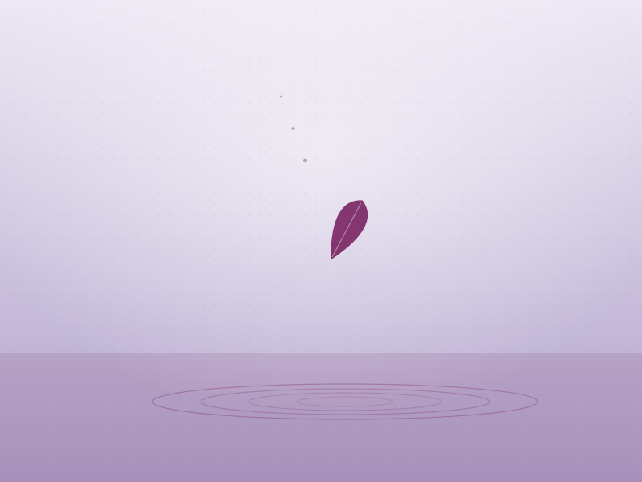
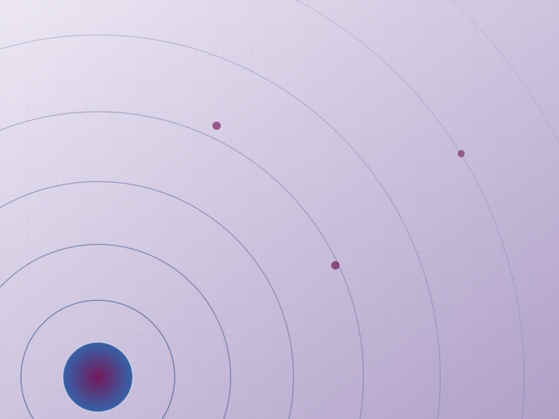
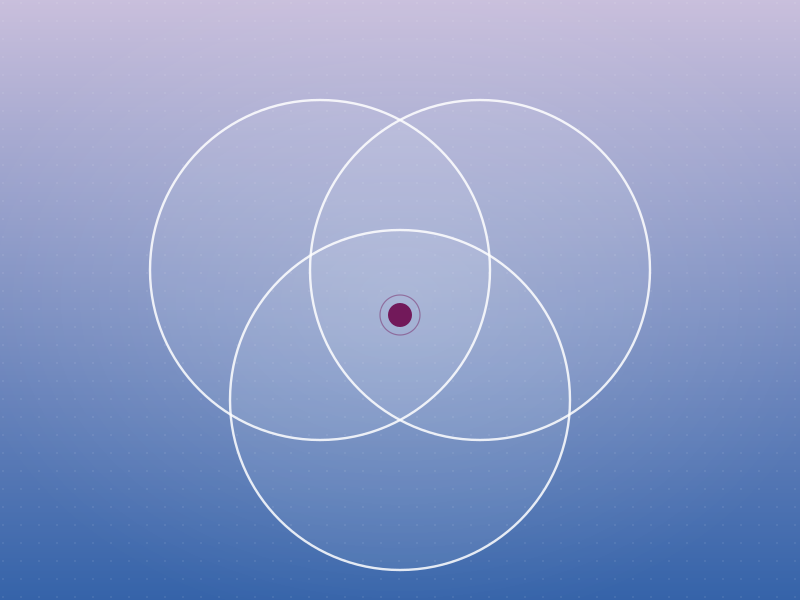
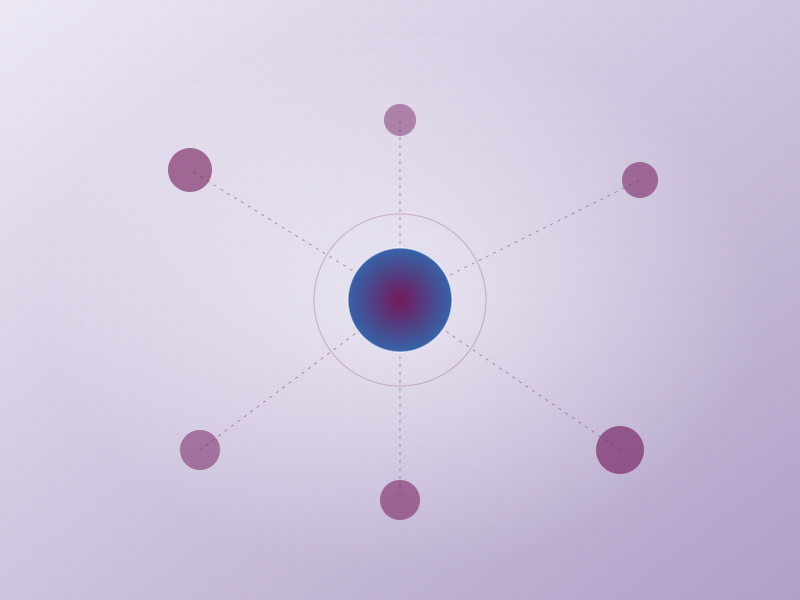

Espacios grupales enfocados en el bienestar emocional, el autoconocimiento y el acompañamiento humano, basados en la metodología de Curación de Actitudes. A través de la escucha, la reflexión y el trabajo compartido, brindamos herramientas para afrontar distintas etapas de vida desde una mirada más consciente, compasiva y en paz.

Formación de facilitadores en Tanatología a través del método Curación de Actitudes, para acompañar procesos de duelo, pérdida y crecimiento personal. Doce módulos con certificación internacional.
Ver detalle del diplomado
Espacio de acompañamiento y trabajo grupal dirigido a personas que atraviesan la pérdida de un ser querido. Basado en la metodología de Curación de Actitudes, ofrece un espacio seguro para expresar emociones, comprender el proceso de duelo y encontrar herramientas de acompañamiento y resignificación.
Inscribirme por WhatsApp
Programa formativo basado en la filosofía de Curación de Actitudes, orientado al acompañamiento consciente de personas en procesos de pérdida, duelo y transformación personal. Integra el trabajo interior con herramientas humanas y emocionales para acompañar a otros desde la escucha y la compasión.
Solicitar información
Espacio de escucha, crecimiento personal y acompañamiento emocional para hombres, enfocado en fortalecer relaciones más sanas consigo mismos y con los demás desde los principios de Curación de Actitudes.
Sumarme al grupo
Espacio de acompañamiento para familiares que viven de cerca procesos de adicción. A través de la escucha y el trabajo grupal, brindamos herramientas emocionales, contención y nuevas formas de afrontar el proceso familiar desde límites saludables y el autocuidado.
Solicitar informaciónSi alguno de nuestros talleres te resuena, acércate. Te resolvemos dudas y te avisamos cuando se abran nuevas fechas.
Recibe el calendario de talleres y reflexiones de Curación de Actitudes una vez al mes.